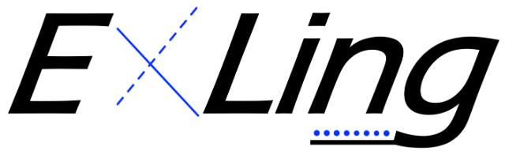
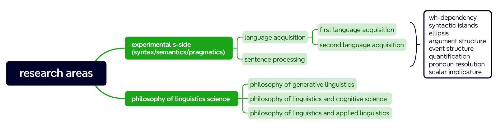

experimental acquisition & processing of syntax/semantics/pragmatics
My research rests on two convictions about what linguistic inquiry is. First, natural languages are governed by inherent, organizational principles. Whether one works within a broadly formalist or a broadly functionalist tradition, research must ultimately be anchored in linguistic facts, phenomena, ontology, or structure. Scholarship that addresses only the social, educational, or engineering significance of language WITHOUT grounding its arguments in facts/phenomena/ontology/structure does not, to my mind, constitute linguistics or applied linguistics. Second, while formal logical derivation through introspection remains an indispensable mode of inquiry, it is better for linguistics to have constructive dialogue with neighboring sciences, above all biology and neuroscience. I look forward to seeing that Marr's three levels (computational, algorithmic, and implementational level) will eventually be connected. Interesting linguistic conjectures are valuable, but the harder and more consequential task is to specify the mapping relations that hold across levels.

This philosophical orientation is what draws me, at the middle level, to experimental acquisition and processing as my two primary commitments. Drawn to the conceptual parsimony of linguistic theory, I have long been fascinated by a striking asymmetry: children assemble an elaborate grammatical system from remarkably sparse linguistic input. The observable surface outcomes can appear deceptively simple, yet multiple hypotheses are capable of accounting for those very same patterns. As I engaged broadly with language acquisition literature across journals such as Language Acquisition and Applied Psycholinguistics, I repeatedly ran up against this core interpretive difficulty, which concrete phenomena like multiple wh‑questions vividly illustrate.
I could read off children’s final interpretations from offline comprehension tasks, yet those end‑state responses alone can't settle competing hypotheses. Even when children produce correct judgements, I can't readily tell whether they are respecting syntax/semantics constraints incrementally as a sentence unfolds, or reconstructing meaning retroactively once a full sentence is complete. Exposure to psycholinguistic work in those same journals made me realize that children may already possess target grammatical representations, yet memory limits and feature‑driven retrieval pressures can disrupt real‑time dependency building along the way. This is precisely why pure offline acquisition work hits its limits for me. Relying only on post‑hoc child responses, I lack the empirical leverage to tease apart whether observed behavioral shortcomings stem from gaps in core grammatical competence, or from transient, real‑time cognitive interference that conceals otherwise intact linguistic knowledge. It is this limitation, repeatedly highlighted across empirical studies I read, that compels me to integrate acquisition with online sentence processing methods.At the empirical base, my commitments are tested against concrete s-side phenomena spanning morphology, syntax, semantics, and pragmatics. My current and planned work centers on wh-dependencies, syntactic islands, ellipsis, argument structure, event structure, quantification, pronoun resolution, and scalar implicature, to name just a few. It is at this level that experiments become concrete and falsifiable. Each phenomenon is a test bed where claims about inherent organizational principles, about level-bridging, or about the growth and deployment of linguistic knowledge can be confronted with behavioral and neural data.

A subsidiary thread that runs consistently through my work is the philosophy of language science, which interrogates the epistemological and ontological foundations of linguistic inquiry. For instance, I examine the legitimacy of Galilean idealization in formal linguistics, the falsifiability and resilience of theoretical frameworks, the modal distinction between necessary truth and accidental empirical generalization, and the disciplinary identity of linguistics within the broader architecture of cognitive science. I critically engage with tensions between rationalist and empiricist methodologies, the theoretical challenge posed by large language models, and the criteria that distinguish epistemically grounded research from merely nominal interdisciplinarity. This philosophical strand does not stand apart from my experimental program but rather underpins it. I aim to clarify what counts as genuine explanation, how theoretical constructs interface with experimental evidence, and how linguistics can maintain its disciplinary integrity while contributing meaningfully to the science of the mind.My resume is here👇
📄 View my resume online 🚀